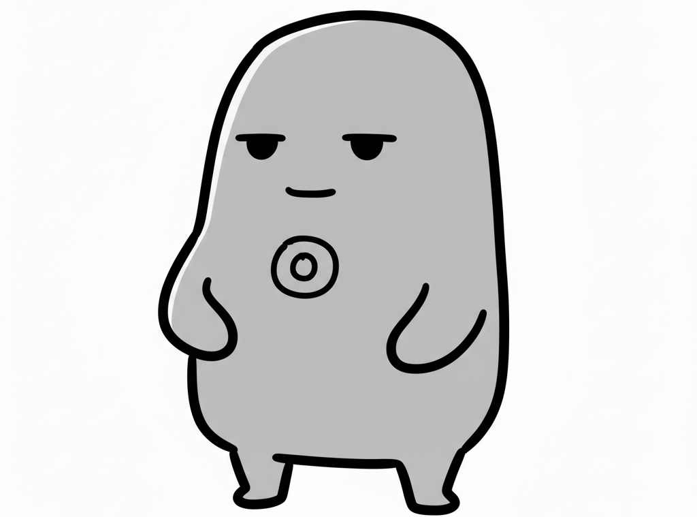
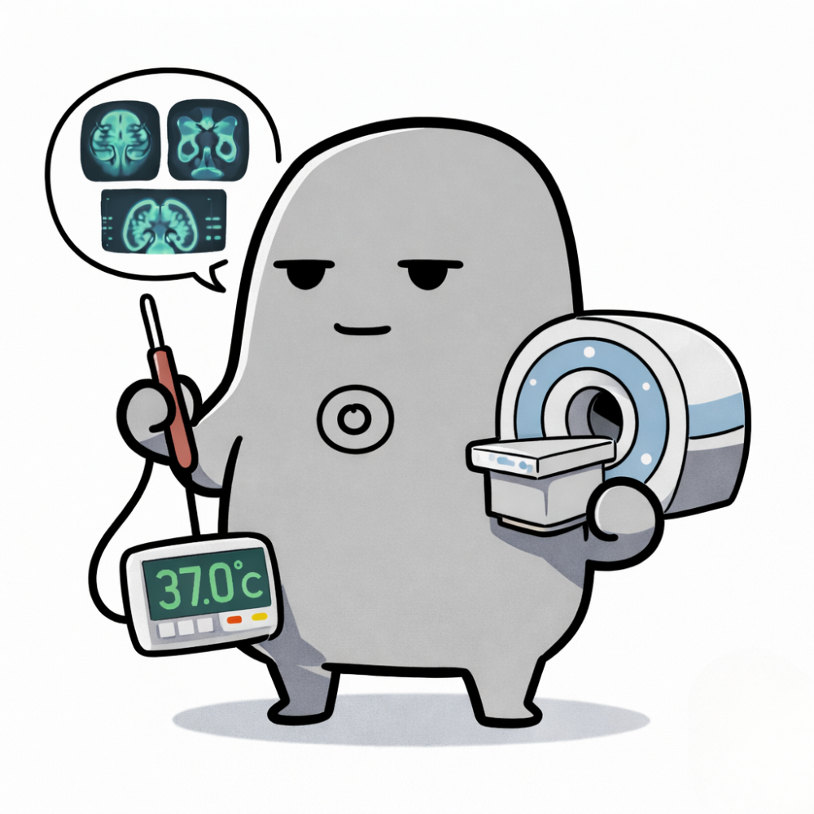
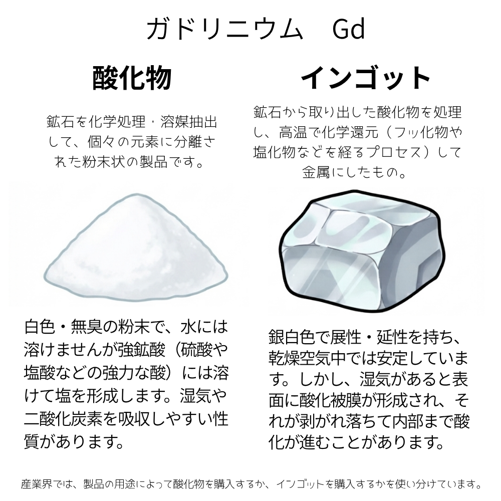
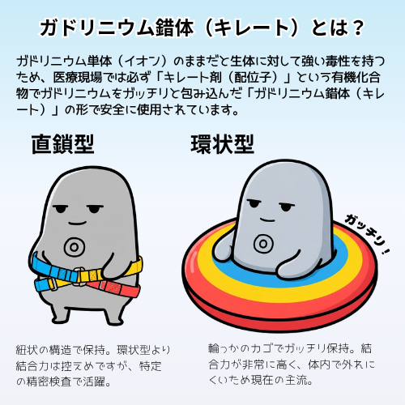
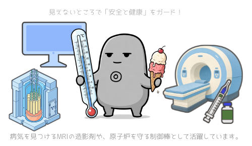

Gadolinium

ガドリニウムは、元素で、『レアアース（希土類元素）』と呼ばれる17種類の一つです。
クールで落ち着いた雰囲気を纏いつつ、人の身体や環境を守ることに強いやりがいを感じている頼もしいサポーター。全元素でトップの「熱中性子吸収能力」や特殊な磁気特性を持ち、精密診断や冷却技術で頼りにされています。実はお茶目な一面があり、冷たいアイスクリームと急速冷凍技術が大好きな技術肌です。

全元素の中で最大の「熱中性子吸収能力」を誇り、医療用MRIの造影剤（Gdキレート）やがん治療（GdNCT）、原子炉の安全制御棒として不可欠な存在。室温付近（約20℃）にキュリー点を持つ珍しい物性を持ち、磁場を加えることで温度変化を生み出す「次世代・磁気冷凍技術」の主役としても期待されています。
| 名称 | ガドリニウム | 記号 | Gd |
|---|---|---|---|
| 番号 | 64 | 原子量 | 157.25 |
| 密度 | 7.90 g/cm3 | 原子半径 | 180 pm |
| 分類 | 希土類元素（ランタノイド） | ||

ガドリニウムは、銀白色の金属光沢を持つランタノイド元素です。常温の乾燥空気中では比較的安定していますが、湿気があるとゆっくりと酸化して表面の光沢を失います。単体イオンには毒性がありますが、有機物と結合させた安定な「錯体（キレート）」にすることで体内で安全に機能し、医療現場で命を守る診断技術を支えています。

ガドリニウムは、医療診断用MRI造影剤として病変部を正確に捉えるほか、X線CTスキャナーの検出器材料や、高輝度ディスプレイ用の蛍光体としても活躍。原子力発電の安全を維持する制御棒や遮蔽材としても機能し、人々の暮らしと最先端医療を多角的にガードしています。

フロンガスを使わず磁場の力で温度をコントロールする「磁気冷凍技術」で、地球に優しいクリーンな未来と大好きなアイスクリームを冷やし守ります！